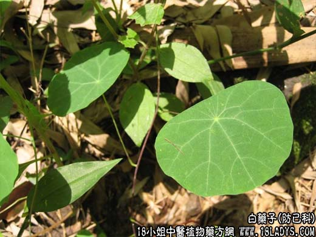

【中药概述】
白药子为防己科藤本植物头花千金藤的块根。苦、寒。归脾、肺、肾经。
1．清热解毒，消痰：用于咽痛肿痛，肺热咳嗽，痰多，热毒疮疡，湿热黄疸，泻痢腹痛，毒蛇咬伤，药物中毒等。
2．凉血散瘀止痛：用于吐血，衄血，金创出血，跌打伤痛等。
【临证应用】
白药子30g 冰片1g，共研末为丸，每服9g，治咽喉肿痛。
【药理作用】
对结核杆菌有抑制作用，对过敏性休克有对抗作用，抗炎作用，镇痛、阻塞热作用。
【化学成分】
含头花藤碱，小檗胺、可待因、吗啡、异粉防己碱等。
【用量用法】
本品8——12g，水煎服，或入丸、散剂。